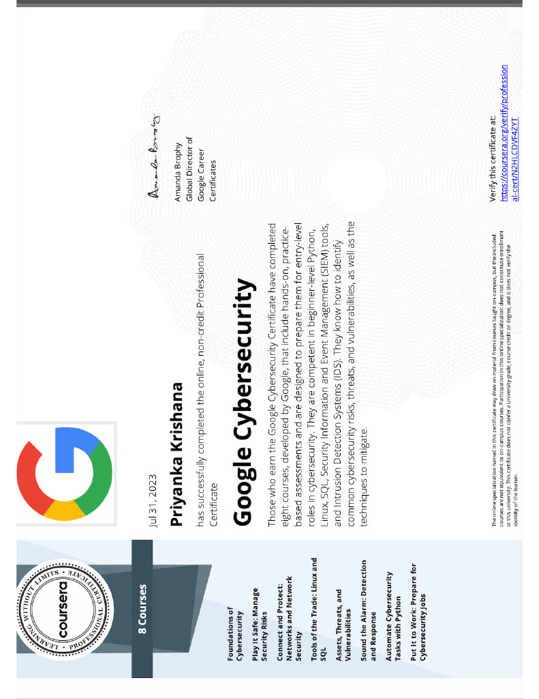

Google Cybersecurity Certification
With this certification I learned skills such as:
- - Fundamental concepts and principles of cybersecurity
- - An understanding of how to identify, assess, and mitigate risks in an organization's IT infrastructure
- - Acquired knowledge about securing networks, including firewalls, intrusion detection/prevention systems (IDS/IPS), and virtual private networks (VPNs)
- - How to utilize linux
